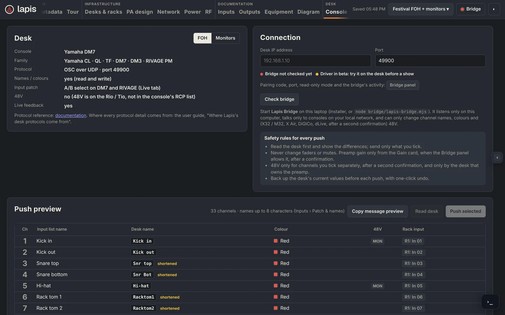
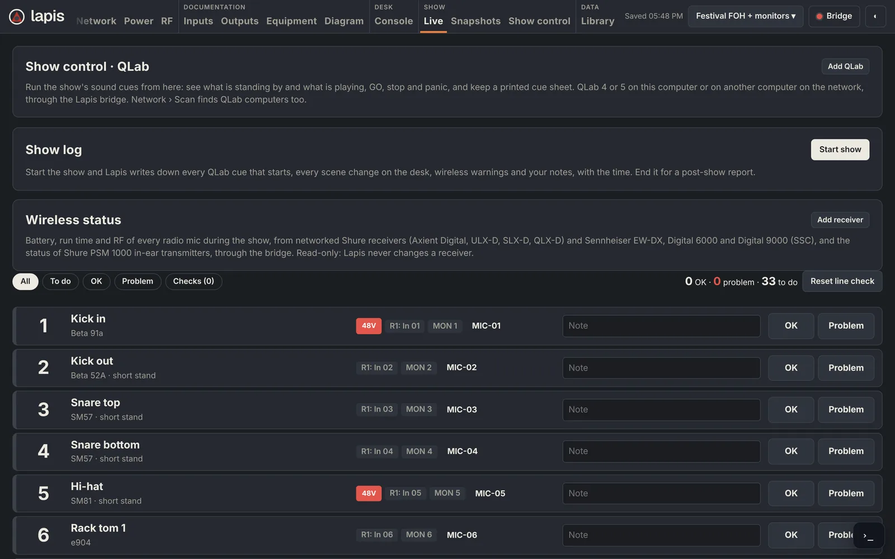

One container for everything your show needs.
Lapis holds every piece of data a live show depends on in one checked file: inputs, outputs, desks and racks, PA, RF, network, power and show control. You and your AI assistant work on the same data, and Lapis carries it from documentation all the way to the desk and the system.

Lapis does nothing you couldn't do by hand. It just does it faster: a catalyst for show production. Enter something once, and every list, drawing, file and device that needs it gets it.
Import a rider or list, start from a template, or let your assistant read it.
One show file, checked against the real limits of your gear.
Lists, patch, diagram, RF plan, power, advance sheet. Always in sync.
Names to the console; project files for the software you already use.
Line check, cues, wireless and network status, and a show log.
A specialised container for show data
Spreadsheets and PDFs hold text. Lapis holds a model of the show: it knows that channel 27 is a Beta 58A on rack 1 input 27, needs no 48V, feeds monitor mix 3, and that your stage rack has four inputs left. Change it once, and everything that depends on it follows.
Rider, venue and tour dates, inputs and outputs, desks and stage racks, PA design, RF, Dante and network, power, scenes and cues, equipment and the documents.
Every change is checked against channel counts, rack limits, network capacity and the gear library. A conflict shows up while you plan, not on the day.
PA coverage, alignment, STI estimate, rigging and RF intermodulation, worked out from published methods with the sources named.
Shows are files you keep, send and archive. The format is a published JSON Schema, so other tools can read it too.


Open to AI, through an API
Lapis has no language model of its own. It gives the assistant you already use precise tools and a strict show format, so the assistant can turn a rider into a show in minutes, while you stay in charge of every value.
An MCP server, a command line, an HTTP API with an OpenAPI description, and a browser API. It works with Claude, ChatGPT and other assistants, locally or on the web.
- Every change is a preview until it is applied.
- Gear must exist in the library: no invented models.
- Rider text is treated as data, never as instructions.
- Everything an assistant sets waits for your review.
- The design tools never touch hardware.
// an assistant working on a show through the Lapis tools lapis_guide() // read the playbook first lapis_new_show({ name: "Summer tour" }) lapis_find_gear({ q: "DM7" }) // racks and protocols that fit lapis_set_inputs({ rows, apply: false }) // preview the input list lapis_validate() // capacity, patch, gear checks lapis_pa() // splays, coverage, STI, rigging lapis_rf_plan({ assign: true }) // frequencies, IMD, legal bands lapis_render({ doc: "all" }) // the paperwork, as PDF lapis_review() // what waits for a human
From documentation to deployment
Most tools stop at the PDF. In Lapis the same data that prints your input list also names your console, builds your loudspeaker project and runs your show control.
Read the whole desk, compare it with the show, and push channel names and colours. You see every difference first, the desk is backed up before each push, and one click undoes it. Faders and mutes are never touched.
- Yamaha CL, QL, TF, DM7, DM3, RIVAGE PM
- Allen & Heath dLive, Avantis, SQ
- DiGiCo SD and Quantum
- Behringer and Midas X32, M32, X Air
Lapis writes, and where it makes sense reads, the files other tools use, so nothing is typed twice.
- d&b ArrayCalc project (.dbpr), out and in
- Chataigne show-control project (.noisette)
- Shure Wireless Workbench frequency list
- QLab trigger cues for desk scenes
- PDF, HTML and PNG documents
Plan the Dante network, IP addresses, VLANs and switch ports in the same show, then scan the real network and see each switch port live.

The Lapis Bridge: show monitoring and management
The Bridge is a small program on your own laptop. It connects Lapis to the desk, the wireless, the network and the show machines, and turns the show file into a control room for the day.
Every channel with its mic, rack input, monitor feed and 48V. Mark OK or problem and add notes as you go.
See what QLab has standing by and playing; GO, stop and panic from the same screen, on this computer or across the network.
Battery, run time and RF of every radio mic from networked Shure and Sennheiser receivers, and Shure PSM 1000 in-ears. Read-only: Lapis never changes a receiver.
Every cue, every desk scene change, every wireless warning and your notes, with the time. End the show and you have the report.
The Bridge answers your own computer only, asks for a pairing code, and writes to hardware only after you confirm. Read-only mode is one switch away.
With the Bridge running, an assistant's changes appear in your open show within seconds, and yours go back to it.

What we couldn't find anywhere else
Engineers already have good tools for single jobs: stage plots, riders, wireless, prediction, playback. What's missing is the thread that ties them together, so the same information isn't typed five times and checked by eye at 2 a.m.
| What you need | Rider and stage-plot apps | Maker software | Lapis |
|---|---|---|---|
| The whole system in one model: inputs to PA, RF, network and power | Inputs and stage only | One part each | Yes |
| Checks against real desk, rack and network limits | Rarely | Own brand only | Yes |
| An assistant can build and check the show through an API | No | No | Yes |
| Same data to the desk, ArrayCalc, Chataigne, Wireless Workbench | Some export a desk file | No | Yes |
| Show day: line check, cues, wireless, network, log | No | Separate tools | Yes, via the Bridge |
| Brand-neutral, with an open show format | Varies | No | Yes |
There is still no way to move a show between console brands, and every touring engineer knows the cost. Lapis keeps the knowledge of your show outside any one desk, in a format you own.
Pricing
Pay once, like Reaper: your licence covers this major version and the next one (buy during 2.x, get every update up to 3.99) and never expires. Prices per company, including VAT. No per-show or per-channel charges.
| Licence | Who | One-time, incl. VAT | |
|---|---|---|---|
| Non-commercial | Students, teachers, charities, hobby use | Free | Get a key |
| Solo, reduced | One person, under €20,000 a year from audio work | €69 | Buy |
| Solo | One person | €189 | Buy |
| Small company | 2 to 10 people | €590 | Buy |
| Company | 11 to 50 people | €1,490 | Buy |
| Large or network | Over 50 people or several sites | By agreement | Ask |
Documentation is free for everyone, also for paid work, no key needed: rider, metadata, tour, inputs, outputs, equipment, diagram and the library, with every export. Design, measurement, RF, desk control and show tools unlock with a key: free for non-commercial use, or a licence below. Paste the key in the app (Metadata › Licence).
Checkout by Polar, our payment provider: card and local payment methods, VAT and invoice handled. Your licence key arrives by email. Paste it in the app or the Bridge panel (Licence). Reading from desks and devices is always free; sending changes to them needs a key. The Bridge checks the key once a month and sends only the key, never your shows. Prices may change for new licences, never for a licence you already have.
Licence
Rider, metadata, tour, inputs, outputs, equipment, diagram and the library, with every export, work in the browser without a key, also for paid work.
Students, teachers and researchers at schools, universities and public research bodies; charities; public bodies; personal hobby use. Under the PolyForm Noncommercial License 1.0.0. Get a free Non-commercial key in the pricing table.
For design, measurement, RF, desk control and show tools: freelance engineers on a paid job, production and rental companies, commercial venues and theatres, and paid training or consulting that uses Lapis.
A student who also does paid shows: studying is free; paid shows need a licence for the tools beyond the documentation. This is a summary; the binding terms are the licence text and the agreement you receive. PolyForm Noncommercial 1.0.0. Desk drivers are in beta: try them on the desk before a show.
Contact
Trying Lapis on a real show or real gear? See Test Lapis, and tell us what you find through the feedback form. Questions, a demo, or a quote for a larger company: write to info@jupiteraudio.org.